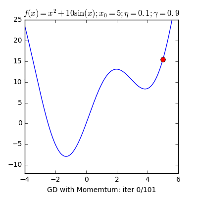

Trong phần 1 của Gradient Descent (GD), tôi đã giới thiệu với bạn đọc về thuật toán Gradient Descent. Tôi xin nhắc lại rằng nghiệm cuối cùng của Gradient Descent phụ thuộc rất nhiều vào điểm khởi tạo và learning rate. Trong bài này, tôi xin đề cập một vài phương pháp thường được dùng để khắc phục những hạn chế của GD. Đồng thời, các thuật toán biến thể của GD thường được áp dụng trong các mô hình Deep Learning cũng sẽ được tổng hợp.
Trong trang này:
- 1. Các thuật toán tối ưu Gradient Descent
- 2. Biến thể của Gradient Descent
- 3. Stopping Criteria (điều kiện dừng)
- 4. Một phương pháp tối ưu đơn giản khác: Newton’s method
- 5. Kết luận
- 6. Tài liệu tham khảo
1. Các thuật toán tối ưu Gradient Descent
1.1 Momentum
Nhắc lại thuật toán Gradient Descent
Dành cho các bạn chưa đọc phần 1 của Gradient Descent. Để giải bài toán tìm điểm global optimal của hàm mất mát \(J(\theta)\) (Hàm mất mát cũng thường được ký hiệu là \(J()\) với \(\theta\) là tập hợp các tham số của mô hình), tôi xin nhắc lại thuật toán GD:
Thuật toán Gradient Descent:
- Dự đoán một điểm khởi tạo \(\theta = \theta_0\).
- Cập nhật \(\theta\) đến khi đạt được kết quả chấp nhận được: \[ \theta = \theta - \eta \nabla_{\theta}J(\theta) \]
với \(\nabla_{\theta}J(\theta)\) là đạo hàm của hàm mất mát tại \(\theta\).
Gradient dưới góc nhìn vật lý
Thuật toán GD thường được ví với tác dụng của trọng lực lên một hòn bi đặt trên một mặt có dạng như hình một thung lũng giống như hình 1a) dưới đây. Bất kể ta đặt hòn bi ở A hay B thì cuối cùng hòn bi cũng sẽ lăn xuống và kết thúc ở vị trí C.

Tuy nhiên, nếu như bề mặt có hai đáy thung lũng như Hình 1b) thì tùy vào việc đặt bi ở A hay B, vị trí cuối cùng của bi sẽ ở C hoặc D. Điểm D là một điểm local minimum chúng ta không mong muốn.
Nếu suy nghĩ một cách vật lý hơn, vẫn trong Hình 1b), nếu vận tốc ban đầu của bi khi ở điểm B đủ lớn, khi bi lăn đến điểm D, theo đà, bi có thể tiếp tục di chuyển lên dốc phía bên trái của D. Và nếu giả sử vận tốc ban đầu lớn hơn nữa, bi có thể vượt dốc tới điểm E rồi lăn xuống C như trong Hình 1c). Đây chính là điều chúng ta mong muốn. Bạn đọc có thể đặt câu hỏi rằng liệu bi lăn từ A tới C có theo đà lăn tới E rồi tới D không. Xin trả lời rằng điều này khó xảy ra hơn vì nếu so với dốc DE thì dốc CE cao hơn nhiều.
Dựa trên hiện tượng này, một thuật toán được ra đời nhằm khắc phục việc nghiệm của GD rơi vào một điểm local minimum không mong muốn. Thuật toán đó có tên là Momentum (tức theo đà trong tiếng Việt).
Gradient Descent với Momentum
Để biểu diễn momentum bằng toán học thì chúng ta phải làm thế nào?
Trong GD, chúng ta cần tính lượng thay đổi ở thời điểm \(t\) để cập nhật vị trí mới cho nghiệm (tức hòn bi). Nếu chúng ta coi đại lượng này như vận tốc \(v_t\) trong vật lý, vị trí mới của hòn bi sẽ là \(\theta_{t+1} = \theta_{t} - v_t\). Dấu trừ thể hiện việc phải di chuyển ngược với đạo hàm. Công việc của chúng ta bây giờ là tính đại lượng \(v_t\) sao cho nó vừa mang thông tin của độ dốc (tức đạo hàm), vừa mang thông tin của đà, tức vận tốc trước đó \(v_{t-1}\) (chúng ta coi như vận tốc ban đầu \(v_0=0\)). Một cách đơn giản nhất, ta có thể cộng (có trọng số) hai đại lượng này lại: \[ v_{t}= \gamma v_{t-1} + \eta \nabla_{\theta}J(\theta) \]
Trong đó \(\gamma\) thường được chọn là một giá trị khoảng 0.9, \(v_t\) là vận tốc tại thời điểm trước đó, \( \nabla_{\theta}J(\theta)\) chính là độ dốc của điểm trước đó. Sau đó vị trí mới của hòn bi được xác định như sau: \[ \theta = \theta - v_t \]
Thuật toán đơn giản này tỏ ra rất hiệu quả trong các bài toán thực tế (trong không gian nhiều chiều, cách tính toán cũng hoàn tòan tương tự). Dưới đây là một ví dụ trong không gian một chiều.
Một ví dụ nhỏ
Chúng ta xem xét một hàm đơn giản có hai điểm local minimum, trong đó 1 điểm là global minimum: \[ f(x) = x^2 + 10\sin(x) \] Có đạo hàm là: \(f’(x) = 2x + 10\cos(x)\). Hình 2 dưới đây thể hiện sự khác nhau giữa thuật toán GD và thuật toán GD với Momentum:
 |
 |
Hình bên trái là đường đi của nghiệm khi không sử dụng Momentum, thuật toán hội tụ sau chỉ 5 vòng lặp nhưng nghiệm tìm được là nghiệm local minimun.
Hình bên phải là đường đi của nghiệm khi có sử dụng Momentum, hòn bi đã có thể vượt dốc tới khu vực gần điểm global minimun, sau đó dao động xung quanh điểm này, giảm tốc rồi cuối cùng tới đích. Mặc dù mất nhiều vòng lặp hơn, GD với Momentum cho chúng ta nghiệm chính xác hơn. Quan sát đường đi của hòn bi trong trường hợp này, chúng ta thấy rằng điều này giống với vật lý hơn!
Nếu biết trước điểm đặt bi ban đầu theta, đạo hàm của hàm mất mát tại một điểm bất kỳ grad(theta), lượng thông tin lưu trữ từ vận tốc trước đó gamma và learning rate eta, chúng ta có thể viết hàm số GD_momentum trong Python như sau:
# check convergence
def has_converged(theta_new, grad):
return np.linalg.norm(grad(theta_new))/
len(theta_new) < 1e-3
def GD_momentum(theta_init, grad, eta, gamma):
# Suppose we want to store history of theta
theta = [theta_init]
v_old = np.zeros_like(theta_init)
for it in range(100):
v_new = gamma*v_old + eta*grad(theta[-1])
theta_new = theta[-1] - v_new
if has_converged(theta_new, grad):
break
theta.append(theta_new)
v_old = v_new
return theta
# this variable includes all points in the path
# if you just want the final answer,
# use `return theta[-1]`
1.2. Nesterov accelerated gradient (NAG)
Momentum giúp hòn bi vượt qua được dốc locaminimum, tuy nhiên, có một hạn chế chúng ta có thể thấy trong ví dụ trên: Khi tới gần đích, momemtum vẫn mất khá nhiều thời gian trước khi dừng lại. Lý do lại cũng chính là vì có đà. Có một phương pháp khác tiếp tục giúp khắc phục điều này, phương pháp đó mang tên Nesterov accelerated gradient (NAG), giúp cho thuật toán hội tụ nhanh hơn.
Ý tưởng chính
Ý tưởng cơ bản là dự đoán hướng đi trong tương lai, tức nhìn trước một bước! Cụ thể, nếu sử dụng số hạng momentum \(\gamma v_{t-1}\) để cập nhật thì ta có thể xấp xỉ được vị trí tiếp theo của hòn bi là \(\theta - \gamma v_{t-1}\) (chúng ta không đính kèm phần gradient ở đây vì sẽ sử dụng nó trong bước cuối cùng). Vậy, thay vì sử dụng gradient của điểm hiện tại, NAG đi trước một bước, sử dụng gradient của điểm tiếp theo. Theo dõi hình dưới đây:

-
Với momentum thông thường: lượng thay đổi là tổng của hai vector: momentum vector và gradient ở thời điểm hiện tại.
-
Với Nesterove momentum: lượng thay đổi là tổng của hai vector: momentum vector và gradient ở thời điểm được xấp xỉ là điểm tiếp theo.
Công thức cập nhật
Công thức cập nhật của NAG được cho như sau:
\[
\begin{eqnarray}
v_{t} &=& \gamma v_{t-1} + \eta \nabla_{\theta}J(\theta - \gamma v_{t-1}) \
\theta &=& \theta - v_{t}
\end{eqnarray}
\]
Để ý một chút các bạn sẽ thấy điểm được tính đạo hàm đã thay đổi.
Ví dụ minh họa
Dưới đây là ví dụ so sánh Momentum và NAG cho bài toán Linear Regression:
 |
Hình bên trái là đường đi của nghiệm với phương pháp Momentum. nghiệm đi khá là zigzag và mất nhiều vòng lặp hơn. Hình bên phải là đường đi của nghiệm với phương pháp NAG, nghiệm hội tụ nhanh hơn, và đường đi ít zigzag hơn.
(Source code cho hình bên trái và hình bên phải).
1.3. Các thuật toán khác
Ngoài hai thuật toán trên, có rất nhiều thuật toán nâng cao khác được sử dụng trong các bài toán thực tế, đặc biệt là các bài toán Deep Learning. Có thể nêu một vài từ khóa như Adagrad, Adam, RMSprop,… Tôi sẽ không đề cập đến các thuật toán đó trong bài này mà sẽ dành thời gian nói tới nếu có dịp trong tương lai, khi blog đã đủ lớn và đã trang bị cho các bạn một lượng kiến thức nhất định.
Tuy nhiên, bạn đọc nào muốn đọc thêm có thể tìm được rất nhiều thông tin hữu ích trong bài này: An overview of gradient descent optimization algorithms .
2. Biến thể của Gradient Descent
Tôi xin một lần nữa dùng bài toán Linear Regression làm ví dụ. Hàm mất mát và đạo hàm của nó cho bài toán này lần lượt là (để cho thuận tiện, trong bài này tôi sẽ dùng ký hiệu \(\mathbf{X}\) thay cho dữ liệu mở rộng \(\bar{\mathbf{X}}\)):
\[ J(\mathbf{w}) = \frac{1}{2N}||\mathbf{X}\mathbf{w} - \mathbf{y}||_2^2 \] \[ ~~~~ = \frac{1}{2N} \sum_{i=1}^N(\mathbf{x}_i \mathbf{w} - y_i)^2 \] và: \[ \nabla_{\mathbf{w}} J(\mathbf{w}) = \frac{1}{N}\sum_{i=1}^N \mathbf{x}_i^T(\mathbf{x}_i\mathbf{w} - y_i) \]
2.1. Batch Gradient Descent
Thuật toán Gradient Descent chúng ta nói từ đầu phần 1 đến giờ còn được gọi là Batch Gradient Descent. Batch ở đây được hiểu là tất cả, tức khi cập nhật \(\theta = \mathbf{w}\), chúng ta sử dụng tất cả các điểm dữ liệu \(\mathbf{x}_i\).
Cách làm này có một vài hạn chế đối với cơ sở dữ liệu có vô cùng nhiều điểm (hơn 1 tỉ người dùng của facebook chẳng hạn). Việc phải tính toán lại đạo hàm với tất cả các điểm này sau mỗi vòng lặp trở nên cồng kềnh và không hiệu quả. Thêm nữa, thuật toán này được coi là không hiệu quả với online learning.
Online learning là khi cơ sở dữ liệu được cập nhật liên tục (thêm người dùng đăng ký hàng ngày chẳng hạn), mỗi lần thêm vài điểm dữ liệu mới. Kéo theo đó là mô hình của chúng ta cũng phải thay đổi một chút để phù hợp với các dữ liệu mới này. Nếu làm theo Batch Gradient Descent, tức tính lại đạo hàm của hàm mất mát tại tất cả các điểm dữ liệu, thì thời gian tính toán sẽ rất lâu, và thuật toán của chúng ta coi như không online nữa do mất quá nhiều thời gian tính toán.
Trên thực tế, có một thuật toán đơn giản hơn và tỏ ra rất hiệu quả, có tên gọi là Stochastic Gradient Descent (SGD).
2.2. Stochastic Gradient Descent.
Trong thuật toán này, tại 1 thời điểm, ta chỉ tính đạo hàm của hàm mất mát dựa trên chỉ một điểm dữ liệu \(\mathbf{x_i}\) rồi cập nhật \(\theta\) dựa trên đạo hàm này. Việc này được thực hiện với từng điểm trên toàn bộ dữ liệu, sau đó lặp lại quá trình trên. Thuật toán rất đơn giản này trên thực tế lại làm việc rất hiệu quả.
Mỗi lần duyệt một lượt qua tất cả các điểm trên toàn bộ dữ liệu được gọi là một epoch. Với GD thông thường thì mỗi epoch ứng với 1 lần cập nhật \(\theta\), với SGD thì mỗi epoch ứng với \(N\) lần cập nhật \(\theta\) với \(N\) là số điểm dữ liệu. Nhìn vào một mặt, việc cập nhật từng điểm một như thế này có thể làm giảm đi tốc độ thực hiện 1 epoch. Nhưng nhìn vào một mặt khác, SGD chỉ yêu cầu một lượng epoch rất nhỏ (thường là 10 cho lần đầu tiên, sau đó khi có dữ liệu mới thì chỉ cần chạy dưới một epoch là đã có nghiệm tốt). Vì vậy SGD phù hợp với các bài toán có lượng cơ sở dữ liệu lớn (chủ yếu là Deep Learning mà chúng ta sẽ thấy trong phần sau của blog) và các bài toán yêu cầu mô hình thay đổi liên tục, tức online learning.
Thứ tự lựa chọn điểm dữ liệu
Một điểm cần lưu ý đó là: sau mỗi epoch, chúng ta cần shuffle (xáo trộn) thứ tự của các dữ liệu để đảm bảo tính ngẫu nhiên. Việc này cũng ảnh hưởng tới hiệu năng của SGD.
Một cách toán học, quy tắc cập nhật của SGD là: \[ \theta = \theta - \eta \nabla_{\theta} J(\theta; \mathbf{x}_i; \mathbf{y}_i) \]
trong đó \(J(\theta; \mathbf{x}_i; \mathbf{y}_i)\) là hàm mất mát với chỉ 1 cặp điểm dữ liệu (input, label) là (\(\mathbf{x}_i, \mathbf{y}_i\)). Chú ý: chúng ta hoàn toàn có thể áp dụng các thuật toán tăng tốc GD như Momentum, AdaGrad,… vào SGD.
Ví dụ với bài toán Linear Regression
Với bài toán Linear Regression, \(\theta = \mathbf{w}\), hàm mất mát tại một điểm dữ liệu là: \[ J(\mathbf{w}; \mathbf{x}_i; y_i) = \frac{1}{2}(\mathbf{x}_i \mathbf{w} - y_i)^2 \] Đạo hàm theo \(\mathbf{w}\) tương ứng là: \[ \nabla_{\mathbf{w}}J(\mathbf{w}; \mathbf{x}_i; y_i) = \mathbf{x}_i^T(\mathbf{x}_i \mathbf{w} - y_i) \] Và dưới đây là hàm số trong python để giải Linear Regression theo SGD:
# single point gradient
def sgrad(w, i, rd_id):
true_i = rd_id[i]
xi = Xbar[true_i, :]
yi = y[true_i]
a = np.dot(xi, w) - yi
return (xi*a).reshape(2, 1)
def SGD(w_init, grad, eta):
w = [w_init]
w_last_check = w_init
iter_check_w = 10
N = X.shape[0]
count = 0
for it in range(10):
# shuffle data
rd_id = np.random.permutation(N)
for i in range(N):
count += 1
g = sgrad(w[-1], i, rd_id)
w_new = w[-1] - eta*g
w.append(w_new)
if count%iter_check_w == 0:
w_this_check = w_new
if np.linalg.norm(w_this_check - w_last_check)/len(w_init) < 1e-3:
return w
w_last_check = w_this_check
return w
Kết quả được cho như hình dưới đây (với dữ liệu được tạo giống như ở phần 1).
 |
Hình bên trái mô tả đường đi của nghiệm. Chúng ta thấy rằng đường đi khá là zigzag chứ không mượt như khi sử dụng GD. Điều này là dễ hiểu vì một điểm dữ liệu không thể đại diện cho toàn bộ dữ liệu được. Tuy nhiên, chúng ta cũng thấy rằng thuật toán hội tụ khá nhanh đến vùng lân cận của nghiệm. Với 1000 điểm dữ liệu, SGD chỉ cần gần 3 epoches (2911 tương ứng với 2911 lần cập nhật, mỗi lần lấy 1 điểm). Nếu so với con số 49 vòng lặp (epoches) như kết quả tốt nhất có được bằng GD, thì kết quả này lợi hơn rất nhiều.
Hình bên phải mô tả hàm mất mát cho toàn bộ dữ liệu sau khi chỉ sử dụng 50 điểm dữ liệu đầu tiên. Mặc dù không mượt, tốc độ hội tụ vẫn rất nhanh.
Thực tế cho thấy chỉ lấy khoảng 10 điểm là ta đã có thể xác định được gần đúng phương trình đường thẳng cần tìm rồi. Đây chính là ưu điểm của SGD - hội tụ rất nhanh.
2.3. Mini-batch Gradient Descent
Khác với SGD, mini-batch sử dụng một số lượng \(n\) lớn hơn 1 (nhưng vẫn nhỏ hơn tổng số dữ liệu \(N\)rất nhiều). Giống với SGD, Mini-batch Gradient Descent bắt đầu mỗi epoch bằng việc xáo trộn ngẫu nhiên dữ liệu rồi chia toàn bộ dữ liệu thành các mini-batch, mỗi mini-batch có \(n\) điểm dữ liệu (trừ mini-batch cuối có thể có ít hơn nếu \(N\) không chia hết cho \(n\)). Mỗi lần cập nhật, thuật toán này lấy ra một mini-batch để tính toán đạo hàm rồi cập nhật. Công thức có thể viết dưới dạng: \[ \theta = \theta - \eta\nabla_{\theta} J(\theta; \mathbf{x}_{i:i+n}; \mathbf{y}_{i:i+n}) \] Với \(\mathbf{x}_{i:i+n}\) được hiểu là dữ liệu từ thứ \(i\) tới thứ \(i+n-1\) (theo ký hiệu của Python). Dữ liệu này sau mỗi epoch là khác nhau vì chúng cần được xáo trộn. Một lần nữa, các thuật toán khác cho GD như Momentum, Adagrad, Adadelta,… cũng có thể được áp dụng vào đây.
Mini-batch GD được sử dụng trong hầu hết các thuật toán Machine Learning, đặc biệt là trong Deep Learning. Giá trị \(n\) thường được chọn là khoảng từ 50 đến 100.
Dưới đây là ví dụ về giá trị của hàm mất mát mỗi khi cập nhật tham số \(\theta\) của một bài toán khác phức tạp hơn.

Để có thêm thông tin chi tiết hơn, bạn đọc có thể tìm trong bài viết rất tốt này.
3. Stopping Criteria (điều kiện dừng)
Có một điểm cũng quan trọng mà từ đầu tôi chưa nhắc đến: khi nào thì chúng ta biết thuật toán đã hội tụ và dừng lại?
Trong thực nghiệm, có một vài phương pháp như dưới đây:
- Giới hạn số vòng lặp: đây là phương pháp phổ biến nhất và cũng để đảm bảo rằng chương trình chạy không quá lâu. Tuy nhiên, một nhược điểm của cách làm này là có thể thuật toán dừng lại trước khi đủ gần với nghiệm.
- So sánh gradient của nghiệm tại hai lần cập nhật liên tiếp, khi nào giá trị này đủ nhỏ thì dừng lại. Phương pháp này cũng có một nhược điểm lớn là việc tính đạo hàm đôi khi trở nên quá phức tạp (ví dụ như khi có quá nhiều dữ liệu), nếu áp dụng phương pháp này thì coi như ta không được lợi khi sử dụng SGD và mini-batch GD.
- So sánh giá trị của hàm mất mát của nghiệm tại hai lần cập nhật liên tiếp, khi nào giá trị này đủ nhỏ thì dừng lại. Nhược điểm của phương pháp này là nếu tại một thời điểm, đồ thị hàm số có dạng bẳng phẳng tại một khu vực nhưng khu vực đó không chứa điểm local minimum (khu vực này thường được gọi là saddle points), thuật toán cũng dừng lại trước khi đạt giá trị mong muốn.
- Trong SGD và mini-batch GD, cách thường dùng là so sánh nghiệm sau một vài lần cập nhật. Trong đoạn code Python phía trên về SGD, tôi áp dụng việc so sánh này mỗi khi nghiệm được cập nhật 10 lần. Việc làm này cũng tỏ ra khá hiệu quả.
4. Một phương pháp tối ưu đơn giản khác: Newton’s method
Nhân tiện đang nói về tối ưu, tôi xin giới thiệu một phương pháp nữa có cách giải thích đơn giản: Newton’s method. Các phương pháp GD tôi đã trình bày còn được gọi là first-order methods, vì lời giải tìm được dựa trên đạo hàm bậc nhất của hàm số. Newton’s method là một second-order method, tức lời giải yêu cầu tính đến đạo hàm bậc hai.
Nhắc lại rằng, cho tới thời điểm này, chúng ta luôn giải phương trình đạo hàm của hàm mất mát bằng 0 để tìm các điểm local minimun. (Và trong nhiều trường hợp, coi nghiệm tìm được là nghiệm của bài toán tìm giá trị nhỏ nhất của hàm mất mát). Có một thuật toán nối tiếng giúp giải bài toán \(f(x) = 0\), thuật toán đó có tên là Newton’s method.
Newton’s method cho giải phương trình \(f(x) = 0\)
Thuật toán Newton’s method được mô tả trong hình động minh họa dưới đây:

Ý tưởng giải bài toán \(f(x) = 0\) bằng phương pháp Newton’s method như sau. Xuất phát từ một điểm \(x_0\) được cho là gần với nghiệm \(x^*\). Sau đó vẽ đường tiếp tuyến (mặt tiếp tuyến trong không gian nhiều chiều) với đồ thị hàm số \(y = f(x)\) tại điểm trên đồ thị có hoành độ \(x_0\). Giao điểm \(x_1\) của đường tiếp tuyến này với trục hoành được xem là gần với nghiệm \(x^*\) hơn. Thuật toán lặp lại với điểm mới \(x_1\) và cứ như vậy đến khi ta được \(f(x_t) \approx 0\).
Đó là ý nghĩa hình học của Newton’s method, chúng ta cần một công thức để có thể dựa vào đó để lập trình. Việc này không quá phức tạp với các bạn thi đại học môn toán ở VN. Thật vậy, phương trình tiếp tuyến với đồ thị của hàm \(f(x)\) tại điểm có hoành độ \(x_t\) là: \[ y = f’(x_t)(x - x_t) + f(x_t) \] Giao điểm của đường thẳng này với trục \(x\) tìm được bằng cách giải phương trình vế phải của biểu thức trên bằng 0, tức là: \[ x = x_t - \frac{f(x_t)}{f’(x_t)} \triangleq x_{t+1} \]
Newton’s method trong bài toán tìm local minimun
Áp dụng phương pháp này cho việc giải phương trình \(f’(x) = 0\) ta có: \[ x_{t+1} = x_t -(f”(x_t))^{-1}{f’(x_t)} \]
Và trong không gian nhiều chiều với \(\theta\) là biến: \[ \theta = \theta - \mathbf{H}(J(\theta))^{-1} \nabla_{\theta} J(\theta) \] trong đó \(\mathbf{H}(J(\theta))\) là đạo hàm bậc hai của hàm mất mất (còn gọi là Hessian matrix). Biểu thức này là một ma trận nếu \(\theta\) là một vector. Và \(\mathbf{H}(J(\theta))^{-1}\) chính là nghịch đảo của ma trận đó.
Hạn chế của Newton’s method
- Điểm khởi tạo phải rất gần với nghiệm \(x^*\). Ý tưởng sâu xa hơn của Newton’s method là dựa trên khai triển Taylor của hàm số \(f(x)\) tới đạo hàm thứ nhất: \[ 0 = f(x^*) \approx f(x_t) + f’(x_t)(x_t - x^*) \] Từ đó suy ra: \(x^* \approx x_t - \frac{f(x_t)}{f’(x_t)}\). Một điểm rất quan trọng, khai triển Taylor chỉ đúng nếu \(x_t\) rất gần với \(x^*\)! Dưới đây là một ví dụ kinh điển trên Wikipedia về việc Newton’s method cho một dãy số phân kỳ (divergence).
-
Nhận thấy rằng trong việc giải phương trình \(f(x) = 0\), chúng ta có đạo hàm ở mẫu số. Khi đạo hàm này gần với 0, ta sẽ được một đường thằng song song hoặc gần song song với trục hoành. Ta sẽ hoặc không tìm được giao điểm, hoặc được một giao điểm ở vô cùng. Đặc biệt, khi nghiệm chính là điểm có đạo hàm bằng 0, thuật toán gần như sẽ không tìm được nghiệm!
-
Khi áp dụng Newton’s method cho bài toán tối ưu trong không gian nhiều chiều, chúng ta cần tính nghịch đảo của Hessian matrix. Khi số chiều và số điểm dữ liệu lớn, đạo hàm bậc hai của hàm mất mát sẽ là một ma trận rất lớn, ảnh hưởng tới cả memory và tốc độ tính toán của hệ thống.
5. Kết luận
Qua hai bài viết về Gradient Descent này, tôi hy vọng các bạn đã hiểu và làm quen với một thuật toán tối ưu được sử dụng nhiều nhất trong Machine Learning và đặc biệt là Deep Learning. Còn nhiều biến thể khác khá thú vị về GD (mà rất có thể tôi chưa biết tới), nhưng tôi xin phép được dừng chuỗi bài về GD tại đây và tiếp tục chuyển sang các thuật toán thú vị khác.
Hy vọng bài viết có ích với các bạn.
6. Tài liệu tham khảo
[1] Newton’s method - Wikipedia
[2] An overview of gradient descent optimization algorithms
[3] Stochastic Gradient Descent - Wikipedia
[4] Stochastic Gradient Descen - Andrew Ng
[5] Nesterov, Y. (1983). A method for unconstrained convex minimization problem with the rate of convergence o(1/k2). Doklady ANSSSR (translated as Soviet.Math.Docl.), vol. 269, pp. 543– 547.